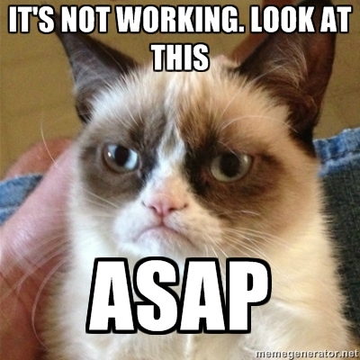
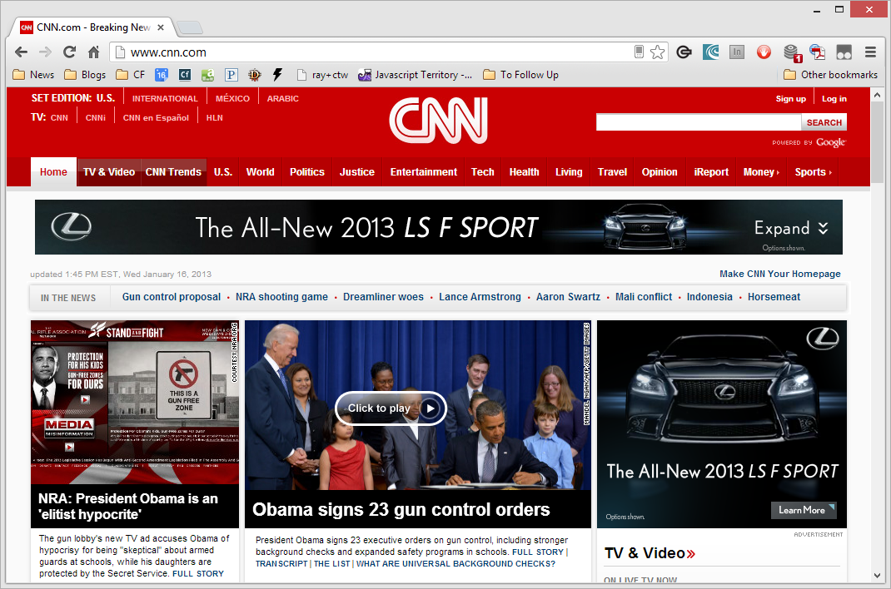
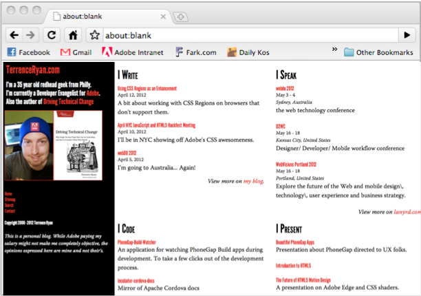
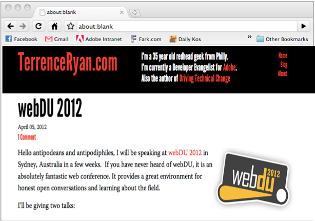
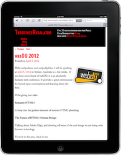

Browser Tools for Debugging and Profit
Ok, so maybe not profit...
Presented by Raymond Camden / @cfjedimaster
Who am I?
- Developer Evangelist for Adobe
- Web Standards, HTML5, JavaScript, ColdFusion
- Blogging at raymondcamden.com

What to do when it won't do...
So, um, we have a problem
It isn't the bugs
The problem is finding the bug
What has to work...
- JavaScript enabled
- jQuery Loaded
- jQuery UI
- jQuery UI CSS
- Have to select the right DOM for the autocomplete
- Have to ensure your setup options match what the control needs
- Have to ensure your data source (which is probably remote) is working right
Lots of Opportunities
The First Bug
is one your probably don't know you have
Can you spot the bug?
Being Proactive
- Using the tools we're going to cover later
- Unit Testing
Chrome Extensions
- javascript-error-notifier
- http://code.google.com/p/javascript-error-notifier/
Demo
/demo1
{errorception}
- http://errorception.com
- 30 day trial
- $5 plan that reports up to 500 errors
- Works via a simple embed
You've got a bug, now what?
- Learn your browser tools
- It doesn't necessarily matter if it's not your standard browser
- And guess what - you can use more than one (really)
Chrome Dev Tools
- Wrench -> Tools -> Developer Tools
- Keyboard combo
- Run at bottom, right, detached
Demo
What we care about...
- Console
- Network
- Elements
- Sources
- Resources
- There is MORE!
Console
- Errors show up here
- You can run commands here as well
- You can view log messages here
Console API
- Your code can send messages to the console (STOP USING ALERTS!)
- I use the heck out of this
- No, really, I make logs like a lumberjack
Console API
- http://getfirebug.com/wiki/index.php/Console_API
- log(), dir()
Examples
console.log("This works");
console.log("What is x?? "+x);
console.log("X", x);
console.log(object);
PRO TIP: The more you curse in your messages the quicker your code gets fixed!
Demo
/demo2
console.dir()
- Dumps an object, not a simple value
- Good for complex data
- Good for figuring out the API to stuff
- Firefox does it a bit nicer
Demo
Network Requests
- Check the output
- Look for things like redirects or errors
- JSON/P is a bit different
Demo
/demo3 + jsonp
Elements
- Handy for looking at your DOM
- Which may be dynamic (ColdFusion, Ruby, PHP, etc)
- Which may be dynamic (JavaScript)
Demo
/demo4
Sources
- Losts of all the scripts on your page
- Also - a debugger
Debugger Key Terms
- Breakpoints
- Specific
- Dynamic
- DOM Change, XHR, Events
- Stepping (i.e. what to do on stop)
Demo
/demo5 + hotswap
Resources
- Cookies, Databases, IndexedDB, Local (and Session) Storage, Application Cache
- As well as HTML, JS, and CS
Demo
Mobile Web
Wait... what... you can debug mobile web?
Problems
- No console (ok, there is, but do you want to use it?)
- Entering URLs is a pain
- People insist on having different types of devices
- Different sizes, different HTML capabalities, CSS, JavaScript, and different performance
Solution One
Edge Inspect
Edge Inspect
- Part of the Creative Cloud (creative.adobe.com)
- Small desktop app, Chrome extension, iOS/Android app
- Free
How it works...
- On your desktop, startup the app
- On your desktop, enable it in the extension
- On N mobile devices, open the app
- Enter connection codes



Demo
Remote Debugging
- Dev Tools for your Mobile Web (and PhoneGap on iOS)
- USB Connection between your desktop and device
- Android: Details (notice, Chrome for Android, not the old browser)
- iOS: Safari on desktop, setting on mobile device (Mac only #sadface)
Demo
Unit Testing
A way to ensure that if you fix X, you don't break y
Focuses on small, atomic tests
Examples
- Jasmine (http://pivotal.github.com/jasmine/)
- Selenium (http://docs.seleniumhq.org/)
Jasmine
- "Behavior-driven" tests
- "This should do X..."
- English-language type code
Jasmine Examples
Selenium
- Note - multiple parts I'm not discussing
- Browser driver (Firefox)
- Simplest level, do X, look for Y
Selenium Examples
Where to go next?
- Check out extensions
- Read/Bookmark the Mozilla Developer Network (developer.mozilla.org)
- Never accept not knowing where the bug is